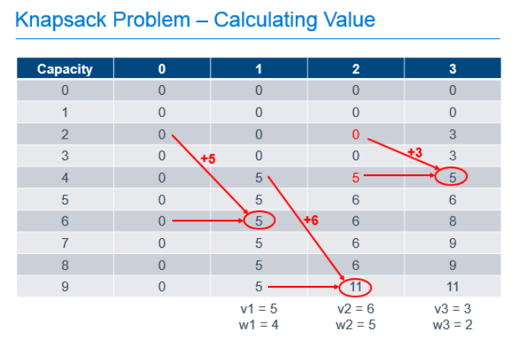

Tag: math
Optimization for Developers
Posted by bsstahl on 2016-10-15 and Filed Under: development
The slide deck for my presentation on Optimization for Developers (A Developer’s Guide to Finding Optimal Solutions) can be found here. I hope that if you attended one of my code camp sessions on the topic, you enjoyed it and found it valuable. I am happy to accept any feedback via @bsstahl.
Tags: ai algorithms development dynamic skill math optimization
A Software Developer's View of Dynamic Programming
Posted by bsstahl on 2016-07-01 and Filed Under: development
Dynamic Programming (DP) is a mathematical tool that can be used to efficiently solve certain types of problems and is a must-have in any software developer's toolbox. A lot has been written about this process from a mathematician's perspective but there are very few resources out there to help software developers who want to implement this technique in code. In this article and the companion conference talk "Dynamic Optimization - One Algorithm All Programmers Should Know", I attempt to demystify this simple tool so that developer's can implement it for their customers.
What is Combinatorial Optimization?
Mathematical or Combinatorial Optimization is the process of finding the best available solution to a problem by minimizing or eliminating undesirable factors and maximizing desirable ones. For example, we might want to find the best path through a graph that represents the roads and intersections of our city. In this case, we might want to minimize the distance travelled, or the estimated amount of time it will take to travel that distance. Other examples of optimization problems include determining the best utilization of a machine or device, optimal assignment of scarce resources, and a spell-checker determining the most likely word being misspelled.
We want to make sure that we do not conflate combinatorial optimization with code optimization. It is certainly important to have efficient code when running an optimization algorithm, however there are very different techniques for optimizing code than for optimizing the solution to a problem. Code optimization has to do with the efficiency of the implementation whereas combinatorial optimization deals with the efficiency of the algorithm itself. Efficiency in both areas will be critical for solving problems in large domains.
What is Dynamic Programming?
Ultimately, DP is just a process, a methodology for solving optimization problems that can be defined recursively 1. It is really about a way of attacking a problem that, if it were addressed naïvely, might not produce the best possible answer, or might not even converge to a solution in an acceptable amount of time. Dynamic Programming provides a logical approach to these types of problems through a 2-step process that has the effect of breaking the problem into smaller sub-problems and solving each sub-problem only once, caching the results for later use 2.
The steps in the process are as follows:
- Fill out the cache by determining the value of each sub-problem, building each answer based on the value of the previous answers
- Use the values in the cache to answer questions about the problem
Since we fill-out the entire cache for each problem 3, we can be 100% certain that we know what the best possible answers to the questions are because we have explored all possibilities.
Dynamic Programming in Action
Let's look at one of the canonical types of problems that can be solved using Dynamic Programming, the knapsack problem. A knapsack problem occurs in any situation where you have a limited capacity that can be consumed by a number of different possible options. We need to look for the best fit and optimize for the maximum based on the definition of value in our problem. This class of problem gets its name from the story of the archeologist in the collapsing ruin. She has a knapsack that can hold a known weight without tearing and she needs to use it to rescue artifacts from the ruin before it collapses entirely. She wants to maximize the value of artifacts she can save, without exceeding the capacity of her knapsack, because it would then tear and she wouldn't be able to carry anything.
We can solve this type of problem using Dynamic Programming by filling-out a table that holds possible capacities, from 0 to the capacity of our known knapsack, and each of the possible items to use to fill that space, as shown below.

In this example, there are 3 items with weights of 4, 5 and 2. These items have values of 5, 6 and 3 respectively and can be placed in a knapsack with capacity of 9. The leftmost column of the table represents the capacities of knapsacks from 0, up to and including the capacity of our knapsack. The next column represents the best value we would get in the knapsack if we had the option of putting 0 items in our knapsack. The next, the best value if we had the option of taking the 1st item, the next column, the option to take the 2nd item on top of any previous items, and so forth until we complete the table. As you can see, the most value we can get in our knapsack with the option of picking from these 3 items is 11, as found in the last row of the last column. That is, the cell that represents a knapsack with our known capacity, with the option to chose from all of the items.
To calculate each of these cells, we build on the values calculated earlier in the process. For the 1st column, it is easy. If we can chose no items, the value of the items in our knapsack is always 0. The rest of the cells are calculated by determining the greater of the following 2 values:
- The value if we didn't take the current item, which is always the value of the same capacity knapsack from the previous column
- The value if we took the current item, which is the value of the current item, added to the value of the knapsack from the previous column if the weight of the current item were removed
So, for the cell in the column labeled "1" with a knapsack capacity of 6, we take the greater of:
- 0, since we wouldn't have any items in the knapsack if we chose not to take the item
- 5, the value of the current item, added to the value of the other items in the knapsack, which was previously empty
For the cell in column "2" with a knapsack capacity of 9, we take the greater of:
- 5, which is the value of the knapsack with capacity 9 from column "1" indicating that we didn't take the 2nd item
- 11, which is the value of the current item added to the best value of the knapsack with capacity 4 (subtract the weight of our current item from the capacity of the current knapsack) with the option of taking only the previous items.
Each cell in the table can be filled out by doing these simple calculations, 1 addition and 1 comparison, using the values previously calculated as shown in the annotated table below.

So we've filled out the table and know, from the cell in the bottom right that the maximum value we can get from this knapsack with these items is 11. Great, but that only answers the question of maximum value, it doesn't tell us which items are chosen to achieve this value. To determine that, we need to work backward from the known best value.
Starting at the known best value in the bottom-right cell, we can look one cell to the left to see that the value there is the same. Since we know that taking an item would increase the value of the knapsack, we can know that we must not have chosen to take the item in the last column. We can then repeat the process from there. From the bottom cell in the column labeled "2", we can look left and see that the value in the previous column did change, so we know we need to take the item in column "2" to get our maximum value. Since we know that item 2 had a weight of 5, we can subtract that from the capacity of our knapsack, and continue the process from that point, knowing that we now only have 4 more units of capacity to work with. Comparing the item in the column labeled "1" and a knapsack capacity of 4 with the value of the equivalent knapsack in column "0", we can see that we need to include item 1 in our knapsack to get the optimum result.

What did we actually do here?
There is no magic here. All we did was take a problem that we could describe in a recursive way, and implement a process that used easy calculations that built upon the results of previous calculations, to fill-out a data cache that allowed us to answer the two primary questions of this problem:
- What is the maximum value of the knapsack with capacity 9 and the option to take the 3 previously described items up to the capacity of the knapsack?
- Which items of the 3 do we need to take to achieve the maximum value described in question
You can probably see that if both axes of this table, the capacity of the knapsack, and the number of items we can chose from, are extremely large, we may run into memory or processing-time constraints when implementing this solutions. As a result, this may not be the best methodology for solving problems where both the capacity of the knapsack and the number of items is extremely high. However, if either is a reasonable number, Dynamic Programming can produce a result that is guaranteed to be the optimum solution, in a reasonable amount of time.
Continue the Conversation
I am happy to answer questions or discuss this further. Ping me @bsstahl with your comments or questions. I'd love to hear from you. I am also available to deliver a talk to your conference or user group on this or other topics. You can contact me here.
Footnotes
In mathematical terms, DP is useful for solving problems that exhibit the characteristics of Overlapping Subproblems and Optimal Substructure. If a problem is able to be described recursively, it will usually exhibit these traits, but the use of the recursion concept here is a generalization to put the problem in software developer's terms.
The process of storing a value for later use is known in mathematics as memoization, an operation which, for all intents and purposes, is equivalent to caching.
Variants of certain DP algorithms exist where the process can be cut-off under certain conditions prior to fully populating the cache. These variants are not discussed here.